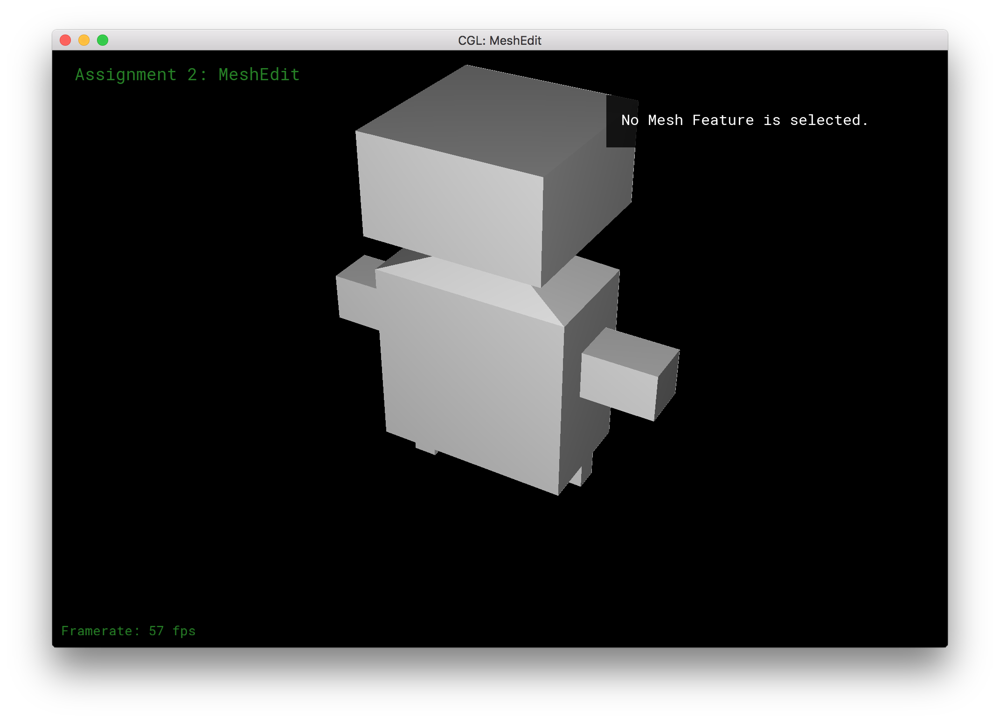
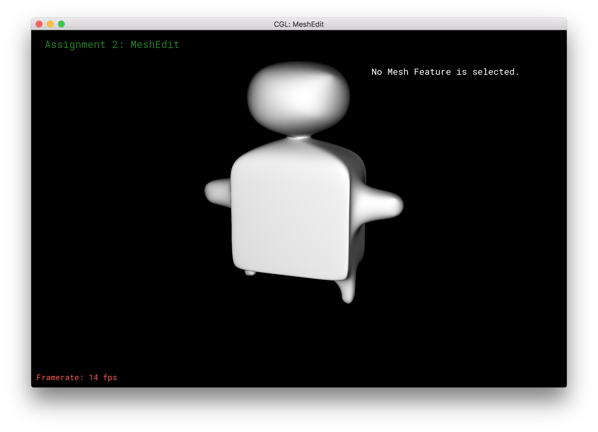
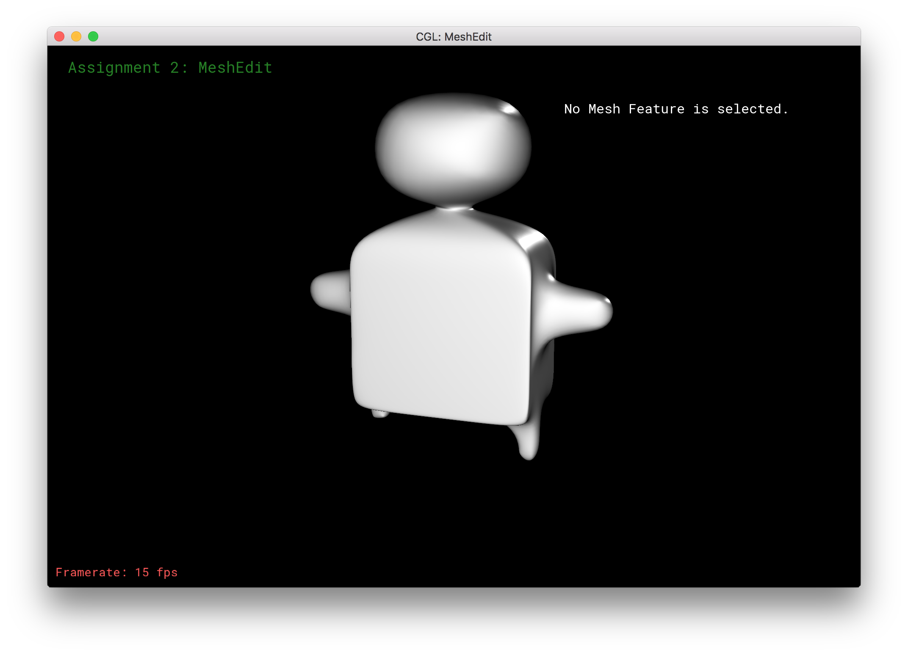
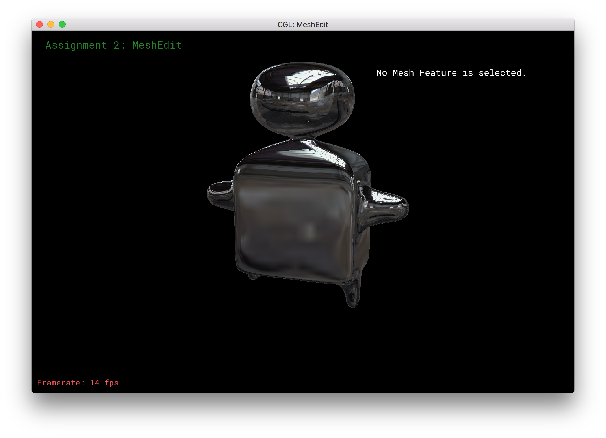
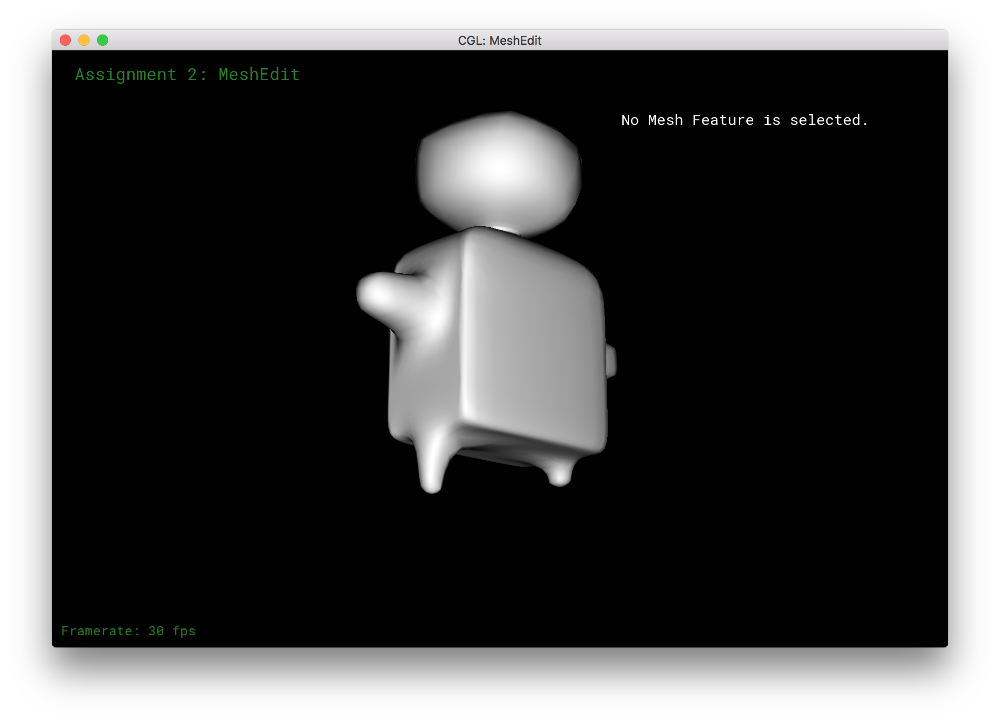
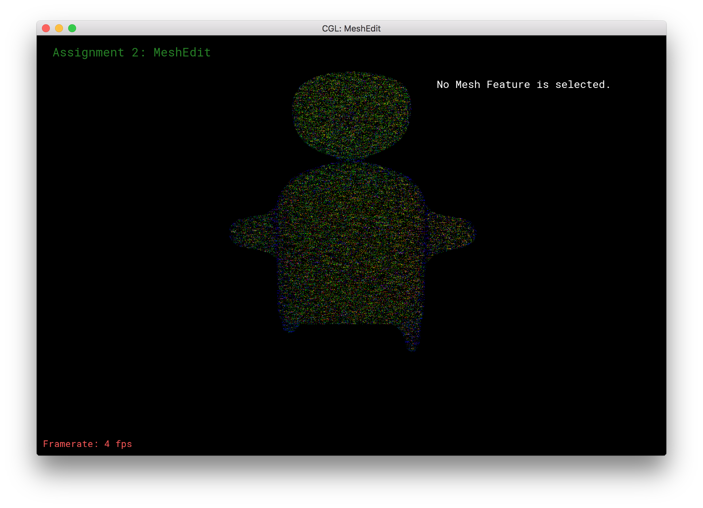

Part 7: Design your own mesh
In part 7, we simply use Blender to design our own humanoid mesh. Here are some images before subdividing:

Diffuse. Deliverable.

After subdividing:

Diffuse. Deliverable.

Specular + Diffuse. Deliverable.

Environment mapping. Deliverable.

Diffuse - another angle. Deliverable.

Finally here's an image of what using a texture map that isn't implemented looks like:

Using non-implemented GLSL shader.